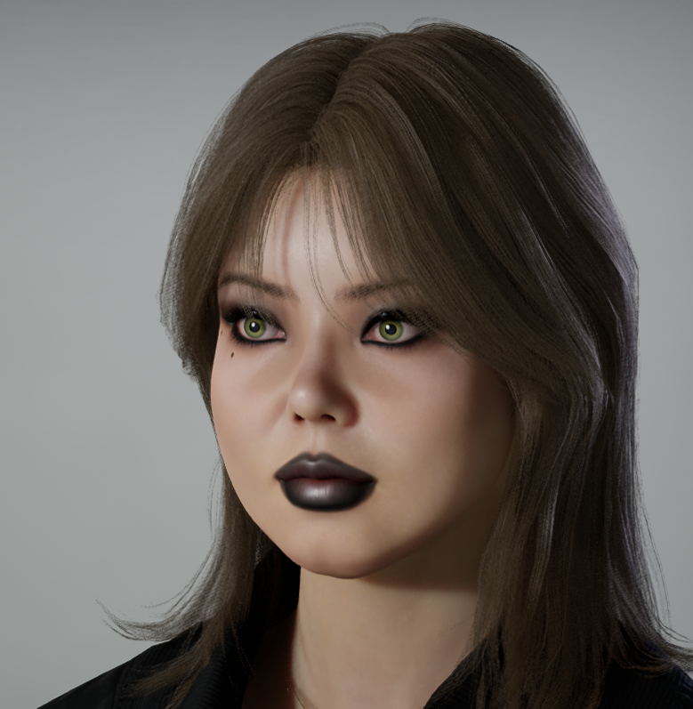

.png)


À propos
Bonjour, je m'appelle Élodie Houliez, graphiste de 33 ans, actuellement à la recherche d'un emploi dans le domaine de la communication. Diplômée de la spécialisation professionnelle assistante designer graphique et multimédia (DSP ADGM) à l'Université du Littoral Côte d'Opale, j'ai acquis des compétences en graphisme, photographie, retouche photo, création de supports de communication et montage vidéo. Rigoureuse, patiente et ouverte à la critique constructive, je suis capable de travailler aussi bien en équipe qu'en autonomie. Curieuse de nature, j'aime découvrir de nouvelles techniques, apprendre de nouveaux logiciels et relever de nouveaux défis. À travers ce portfolio, je vous présente mes réalisations personnelles ainsi que les projets réalisés durant ma formation.
Mes qualités
- Conception de mises en page selon une charte graphique
- Création de supports de communication
- Prise de vue photographique
- Photomontage et retouche photo
- Restauration de photographies anciennes
- Création d'illustrations et de logos
- Montage vidéo et traitement du son
- Photographie
- Rigueur
- Autonomie
- Esprit d'équipe
- Adaptabilité
- Perfectionnisme
Mes créations
Découvrez une sélection de mes réalisations : photomontages, illustrations, logos, mises en page, supports de communication et créations graphiques réalisées avec la suite Adobe ainsi que Canva.
Découvrir le portfolio →